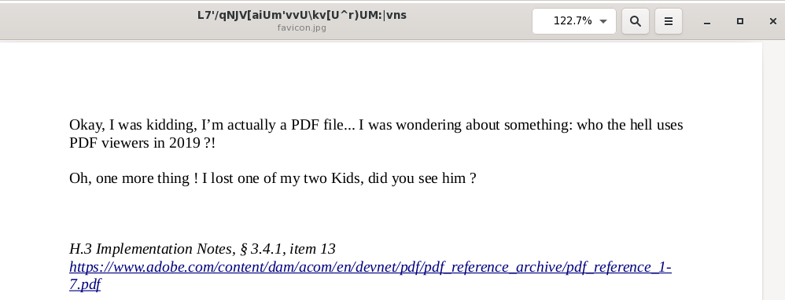

- Tue 12 November 2019
- challenges
- #CTF, #blackalps, #forensics, #PDF
This is my solution for the BlackAlps CTF 2019 alps forensic challenge. We start with following file 'favicon.jpg':
zep@base:~/$ sha256sum favicon.jpg
ae74c70953f804b1b6f315586530ca956dd16c110f4ffc964741516e5b272529 favicon.jpg
First let's check the mime type of the file using the file tool:
zep@base:~/$ file favicon.jpg
favicon.jpg: JPEG image data, JFIF standard 1.01, resolution (DPI), density 95x95, segment
length 16, progressive, precision 8, 32x32, components 3
And then using exiftool:
zep@base:~/$ exiftool favicon.jpg
ExifTool Version Number : 11.65
File Name : favicon.jpg
Directory : .
File Size : 43 kB
File Modification Date/Time : 2019:11:08 13:13:30-05:00
File Access Date/Time : 2019:11:09 09:47:56-05:00
File Inode Change Date/Time : 2019:11:08 14:18:27-05:00
File Permissions : rw-r--r--
File Type : JPEG
File Type Extension : jpg
MIME Type : image/jpeg
JFIF Version : 1.01
Resolution Unit : inches
X Resolution : 95
Y Resolution : 95
Image Width : 32
Image Height : 32
Encoding Process : Progressive DCT, Huffman coding
Bits Per Sample : 8
Color Components : 3
Y Cb Cr Sub Sampling : YCbCr4:4:4 (1 1)
Image Size : 32x32
Megapixels : 0.001
We have indeed a valid JPG file. Let's have a look at the file in a hex editor:
zep@base:~/$ xxd -l 1030 -c 50 favicon.jpg
00000000: ffd8 ffe0 0010 4a46 4946 0001 0101 005f 005f 0000 ffdb 0043 0003 0202 0302 0203 0303 0304 0303 0405 0805 0504 0405 0a07 0706 ......JFIF....._._.....C..........................
00000032: 080c 0a0c 0c0b 0a0b 0b0d 0e12 100d 0e11 0e0b 0b10 1610 1113 1415 1515 0c0f 1718 1614 1812 1415 14ff db00 4301 0304 0405 0405 ..........................................C.......
00000384: 8e29 3415 6d45 060a 2712 1220 08e1 15bf 84db ce03 73ca 504e 903b 0007 9fff d925 5044 462d 312e 340a 25c3 a4c3 bcc3 b6c3 9f0a .)4.mE..'.. ........s.PN.;.....%PDF-1.4.%.........
000003b6: 3220 3020 6f62 6a0a 3c3c 2f4c 656e 6774 6820 3320 3020 522f 4669 6c74 6572 2f46 6c61 7465 4465 636f 6465 3e3e 0a73 7472 6561 2 0 obj.<</Length 3 0 R/Filter/FlateDecode>>.strea
000003e8: 6d0a 789c 8555 4b8b 9c40 10be fb2b fa1c d054 b5fd b041 041d 9d40 6e9b 0839 m.x..UK..@...+...T...A...@n..9
We can see that it's a valid JPG file, but there seems also to be a valid PDF header starting with the keyword %PDF-1.4%. So let's open this file in a PDF viewer. Surprisingly Adobe Reader complaint while opening the file, whereas the Evince PDF viewer happily opened the file.
The embedded URL points to the Adobe PDF specifications and the mentioned item 13 points out why this JPG / PDF poliglot file actually does work:
https://www.adobe.com/content/dam/acom/en/devnet/pdf/pdf_reference_archive/pdf_reference_1-7.pdf Compatibility and Implementation NotesAPPENDIX H11023.4.1, “File Header” 13. Acrobat viewers require only that the header appear somewhere within the first 1024 bytes of the file.
So let's analyze the discovered PDF using PDF parser:
zep@base:~/$ pdf-parser.py favicon.jpg -a
Comment: 4
XREF: 1
Trailer: 1
StartXref: 1
Indirect object: 40
19: 2, 3, 5, 6, 14, 15, 17, 19, 20, 22, 24, 25, 27, 29, 30, 32, 10, 36, 40
/Annot 4: 11, 12, 7, 9
/Catalog 1: 39
/Font 6: 18, 23, 28, 33, 35, 8
/FontDescriptor 5: 16, 21, 26, 31, 34
/Page 2: 1, 4
/Pages 1: 13
/XObject 2: 37, 38
Search keywords:
/JS 1: 7
/JavaScript 1: 7
/AA 1: 7
/OpenAction 1: 39
/AcroForm 1: 39
/URI 2: 11, 12
We can see that this PDF contains Javascript, has Acroforms and even and an Openaction. Let's extract the embedded Javascript code and have a look at it:
pdf-parser.py --search javascript favicon.jpg
function wtf(pwd) {
return (function(x) {
return x.join('');
})
(
(function(x) {
return x.split('');
})
(pwd).map(function(x) {
return x.charCodeAt(0);
}).map(
function(y) {
return ((
function(x) {
return String.fromCharCode(x);
}
)((
function(x) {
return y + x;
})
((
function(x) {
return x * 10;
})((
function(x) {
return (-1) ** x;
})((
function(x) {
return x % 2;
})(y))))))
}
)
)
}
var pwd = this.getField("InPassword").value;
if (pwd != null && pwd.length > 0){
if (wtf(pwd) == this.info.Title){
app.alert("0.o You actually did it !");
}
else{
app.alert("Haha nope");
}
}
else{
app.alert("Haha nope");
}
)
The found Javascript code was beautified to be more readable. There are plenty of online Javascript code beautifiers and even CyberChef has an corresponding recipe. The interesting part of the Javascript code is at the end: We can see that a password value is taken from the password Acroform and used as input for the Javascript function wtf. The output from this function is compared to the title of the PDF. If both match, a message box shows "You actually did it". This means that the actual flag we're searching for is stored in some encoded way in the title of the PDF. If we supply the right flag, the function wtf encodes it and this value is then compared to the PDF title. To get the flag, we have to understand the function wtf and we have to get the title of the PDF.
To understand what the function wtf does, it's very helpful to be able to actually execute this function and to be able to observe corresponding input and output values. We can use the spidermonkey Javascript engine to be able to execute Javascript code independent from a web browser. Following debian packages contain spidermonkey:
- libmozjs-52-0
- libmozjs-52-dev
Now Javascript code can be executed using the js52 command. To examine the functionality of the wtf function, let's create a new file and copy the corresponding function definition to this file. To study this function, we need to execute it and to print its output. This can be achieved using this Javascript statement:
console.log(wtf("some_input_string"));
Next we have to extract the title from the PDF using this command:
pdf-parser.py --search title favicon.jpg
/Creator <FEFF005700720069007400650072>
/Title <4c37272f714e4a565b6169556d277676555c6b765b555e7229554d3a7c766e73>
/Producer <FEFF004C0069006200720065004F0066006600690063006500200035002E0032>
/CreationDate "(D:20191024083503-04'00')"
The hex string of the title attribute is actually valid UTF-8 and can be decoded using this Ipython command:
ln [1]: bytes.fromhex("4c37272f714e4a565b6169556d277676555c6b765b555e7229554d3a7c766e73")
Out[1]: b"L7'/qNJV[aiUm'vvU\\kv[U^r)UM:|vns"
Now we have everything we need: We can execute the wtf Javascript function using spidermonkey and we have the needed output, which is equal to the title of the PDF. Since we actually already know the first 5 chars of valid flags (valid flags start with 'BA19{'), we can easily check whether the encoding of these first flags chars match the found title of the PDF. To do this, I created following table: The first line contains the first five chars of a valid flags. The second line contains the first five chars of the found PDF title. The next two lines contain the char codes of of the corresponding chars above. The last line contains the difference between the two char codes.
| Name | char1 | char2 | char3 | char4 | char5 |
|---|---|---|---|---|---|
| FLAG | B | A | 1 | 9 | { |
| TITLE | L | 7 | ' | / | q |
| code_f | 66 | 65 | 49 | 57 | 123 |
| code_t | 76 | 55 | 39 | 47 | 113 |
| diff | +10 | -10 | -10 | -10 | -10 |
This table shows nicely that the Javascript function wtf adds or subtracts 10 of the char code of the corresponding char. Since we saw in the Javascript code of the wtf function that once the modulo operation is used to return the remainder of the division of x by 2, I guessed this might be a possible condition to try:
If the char code of the corresponding char is even (x % 2 == 0), subtract 10 from the char code. If the char code of the corresponding char is not even (x % 2 == 1), add 10 to the char code.
I tried this using following Ipython commands:
In [31]: s
Out[31]: "L7'/qNJV[aiUm'vvU\\kv[U^r)UM:|vns"
In [32]: for c in s:
...: d=0
...: o=ord(c)
...: if o % 2 ==0:
...: d=-10
...: else:
...: d=10
...: sys.stdout.write(chr(ord(c)+d))
...:
...:
BA19{D@Leks_w1ll_Rule_Th3_W0rld}
And here we go, we have found the flag: BA19{D@Leks_w1ll_Rule_Th3_W0rld}
Keypoints to remember
- Don't focus too much on the details: The function wtf is very unreadable Javascript and difficult to understand. It's much easier to treat this function as a blackbox and to analyze input and output values of this function whether actually to understand the Javascript code itself.
- Remember what was given: Flags have a common format..